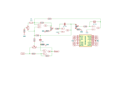
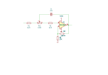
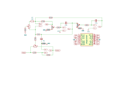

Practical — 06
Design files
The KiCad schematics and boards, exported straight from the repository so they can be read, printed or downloaded without KiCad.
Exported from Equaliser at fdd66cd
(2026-09-25) with KiCad 10.0.6. These are snapshots: the repository is the source, and
build/export_kicad.py regenerates this page when it changes.
Schematics
Low band-pass (parametric) section
Low_Bandpass_Filter/LBP.kicad_sch. The PDF has every sheet;
download it.

Low-pass filter section
Low_Pass_Filter/LPF/LPF.kicad_sch. The PDF has every sheet;
download it.

High band-pass section
High_Bandpass_Filter/HBP/HBP.kicad_sch. The PDF has every sheet;
download it.

Boards
Low band-pass board
Low_Bandpass_Filter/LBP.kicad_pcb
Not laid out yet: 15 footprints imported but no board outline drawn, so there is nothing to render.
Low-pass board
Low_Pass_Filter/LPF/LPF.kicad_pcb
Not laid out yet: no parts placed, so there is nothing to render.
High band-pass board
High_Bandpass_Filter/HBP/HBP.kicad_pcb
Not laid out yet: no parts placed, so there is nothing to render.